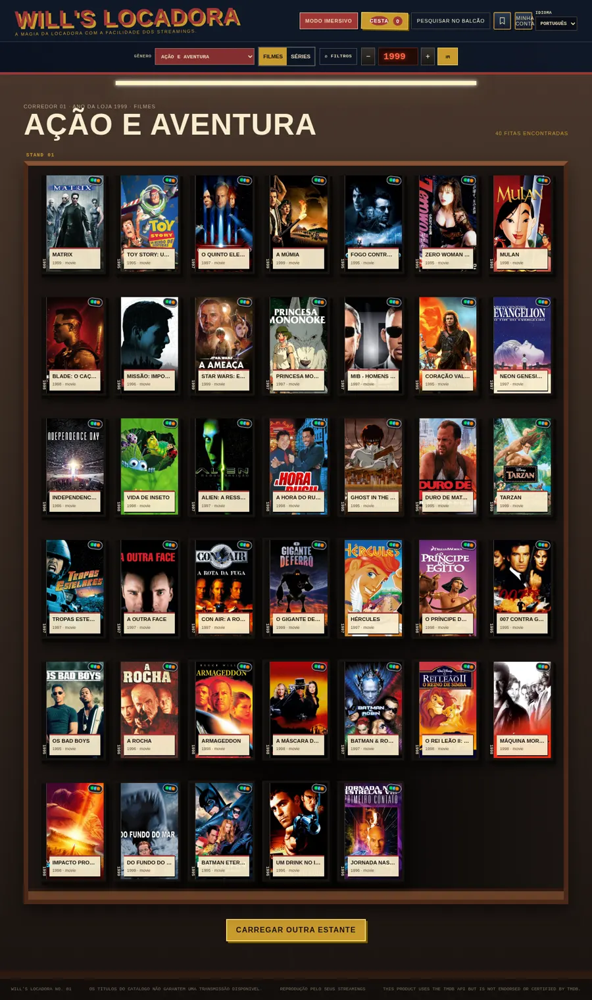
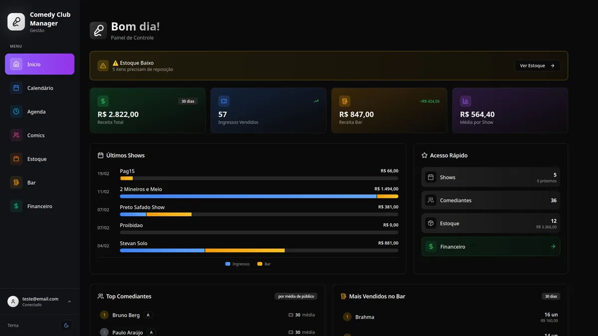
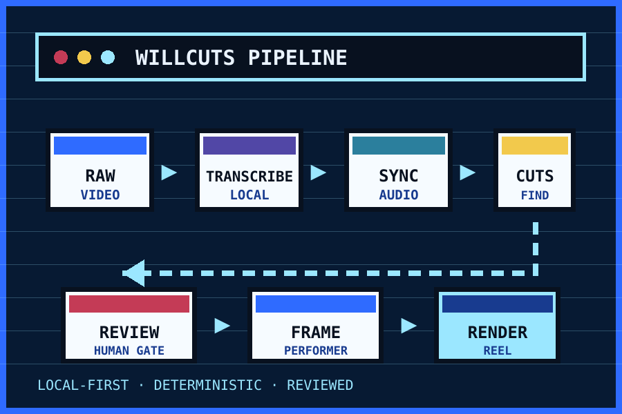
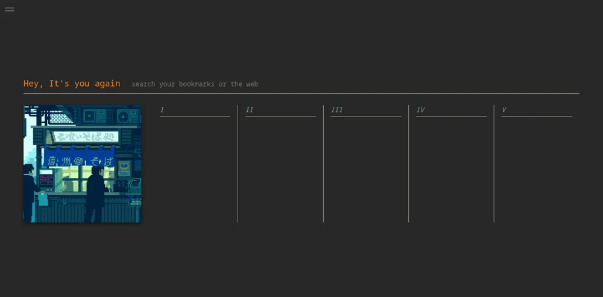
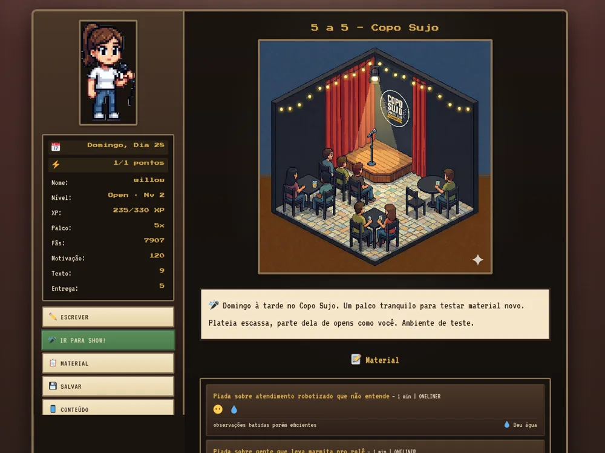
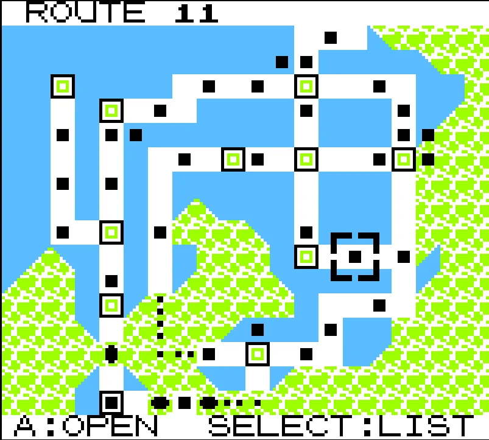

01HI, I’M ILLAN — BUT YOU CAN CALL ME WILL.
I build useful things with personality.
Full-stack developer from Brazil turning real workflows and slightly weird ideas into focused web products, creator tools, and browser games.
▦ SELECTED WORK
PRODUCTS, NOT JUST SCREENS
A focused selection of shipped products and systems. Each project shows the problem, what I owned, and the engineering evidence behind it.

02
03MEDIA · CLI · LOCAL-FIRST
WILLCUTS
One local CLI that turns long performance footage into reviewed, captioned vertical clips.
PROOF Deterministic FFmpeg pipeline, local transcription, human review gates, and 131 test functions.

04
05BROWSER GAME · STATE SYSTEMS
OPEN MIC RPG
A 100-day comedy-career roguelite with branching progression and multiple endings.
PROOF Versioned saves, content registries, deterministic state transitions, and tested mechanics.

06✦ AVAILABLE FOR THE NEXT BUILD
LET'S MAKE
SOMETHING USEFUL
I’m looking for remote full-stack and front-end work where product sense, ownership, and clear communication matter.